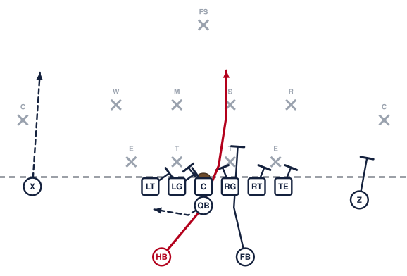

Pro Iso Right

The simplest two-back run there is. The fullback leads through the hole and blocks the linebacker, the halfback follows him. With two receivers spread out, there are fewer defenders in there to beat.
Assignments
- X
- Run off the defender covering you. Take him deep and take him with you.
- LT
- Block back. Take the first defender on or inside you. Nobody crosses your face.
- LG
- Block back. Take the first defender on or inside you. Nobody crosses your face.
- C
- Block the first defender to the backside.
- RG
- Block the man over you and drive him inside. You are the inside wall of the hole.
- RT
- Block the man over you and drive him outside. You are the outside wall of the hole.
- TE
- Block the man over you and turn him out.
- Z
- Block the defender covering you. Get in his way and stay between him and the ball.
- QB
- Open to the playside and hand the ball to the halfback at four yards, then get out of the way.
- FB
- Lead through the hole between the guard and the tackle. Put your facemask on the linebacker and move him.
- HB
- Take the handoff, get downhill behind the fullback, and cut off his block.
Coaching points
- The fullback has to beat the halfback to the hole. Walk through the timing before you run it live.
- Teach the halfback to cut off the fullback's back, not to pick a hole before he gets there.